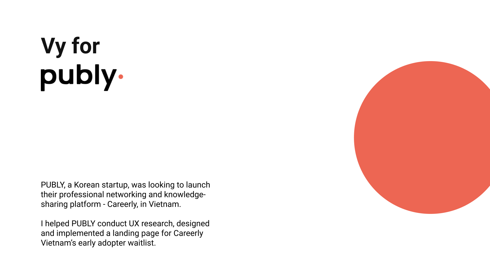
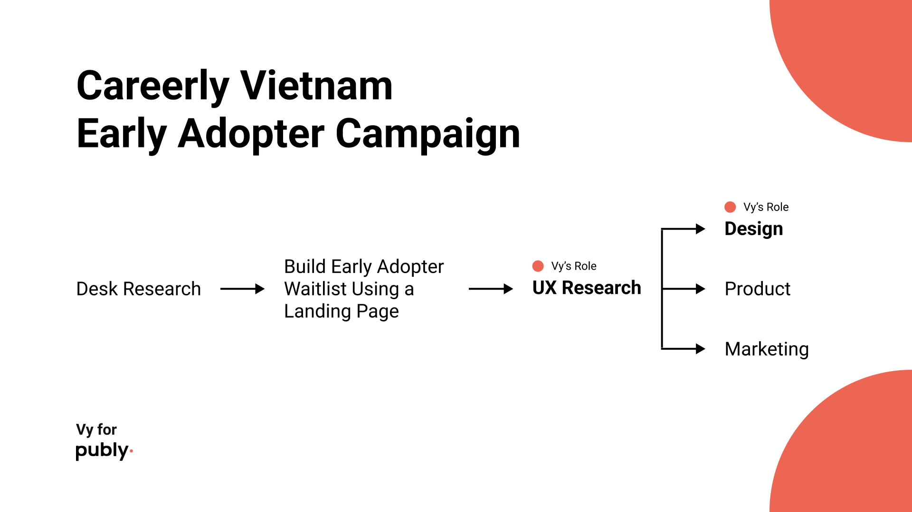
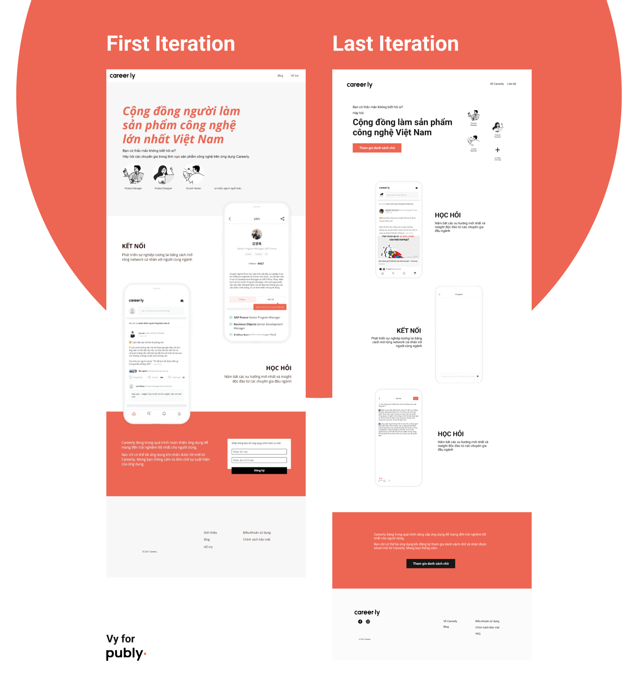

Vy for PUBLY
User Research
A/B Testing
Heatmap Analysis
UI Design
PUBLY, a Korean startup, was looking to launch their professional networking and knowledge-sharing platform - Careerly, in Vietnam. PUBLY already established some reputation in this market with a newsletter on Product Management and wanted to build an early adopters waitlist for Careerly Vietnam from its newsletter readers. The goal was to attract a quality group of early adopters not many adopters.
I helped PUBLY conduct UX research, designed and implemented a landing page for Careerly Vietnam’s early adopter waitlist.

Desk research has lead the team to decide on using a landing page as the final touchpoint for newsletter readers to sign up as early users of Careerly Vietnam. I was tasked to design and implement the landing page.
The team operates with the Agile model and wanted to move fast. Therefore, many iterations of interface design were published as research and validation activities were happening.

To understand more about readers' backgrounds - who they are and who would be more likely to use the Careerly Vietnam app
To determine if the changes actually will bring about improvement
To get quantitative data on demographics, which informed UX writing decision to appeal to this group
To understand users' interaction and inform effective CTA location
Junior Professionals in the 3 largest cities of Vietnam are the most common group to respond to Careerly's ads
Junior Professionals in Vietnam mostly consume bite-sized information from the internet as way to catch up with newest development in their fields
Vietnamese Professionals are aware of the bad effects of "doom-scrolling" social media but do not actively seek to change this behavior
The first iteration was quickly published using a no-code platform to optimize development and update release time. I used a combination of various methods of research to discover insights that can inform the design style as well as the content of the sign-up page. The end result was a short landing page with messaging written to appeal to the Vietnamese Junior Professionals seek to use their time online in a way that is productive to their career.
(in 2 months)
The campaign was evaluated to have successfully accomplish the goal of attracting enthusiastic early adopters from the combined effort of UI/UX and other functions such as marketing.
